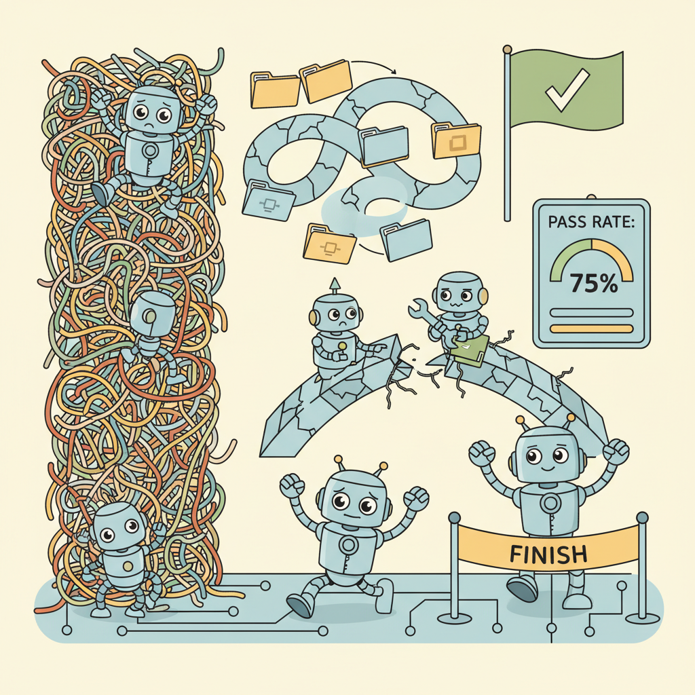

"A benchmark is a mirror. SWE-bench shows us exactly how far agents still have to go."
Eval, Humbly Benchmarked AI Agent
SWE-bench is to coding agents what ImageNet was to computer vision: the benchmark that defines the field. Built from 2,294 real GitHub issues across 12 popular Python repositories, SWE-bench tests whether an agent can read an issue description, navigate a complex codebase, generate a patch, and pass the project's existing test suite. Resolution rates have climbed from under 5% in early 2024 to over 70% by early 2026, making SWE-bench the primary yardstick for measuring progress in agentic software engineering. This section covers the benchmark design, its Verified and Lite subsets, scoring methodology, failure mode analysis, and how to build a minimal agent that runs against SWE-bench.
Prerequisites
This section builds on code generation agents from Section 25.1, evaluation metrics from Section 29.2, and ReAct agent loops from Section 22.2.
This section includes a hands-on lab: Lab: Build a Minimal Coding Agent for SWE-bench Verified. Look for the lab exercise within the section content.

25.6.1 SWE-bench: The De Facto Benchmark for Coding Agents
How do you know whether a coding agent actually works? Demos on cherry-picked examples are unconvincing. Unit tests on toy problems miss the complexity of real software engineering. SWE-bench, introduced by Jimenez et al. (2024), solved this problem by constructing a benchmark from 2,294 real GitHub issues and their corresponding pull requests across 12 popular Python repositories including Django, Flask, scikit-learn, sympy, and matplotlib. Each instance pairs a natural-language issue description with the repository state at the time the issue was filed, and success is measured by whether the agent's patch makes the repository's existing test suite pass. This design captures the full difficulty of real software engineering: understanding ambiguous requirements, navigating large codebases, reasoning about test expectations, and producing correct multi-file patches.
The benchmark's key innovation is its grounding in real development workflows. Rather than synthetic coding puzzles (like HumanEval or MBPP), SWE-bench instances come from actual bug reports and feature requests that human developers resolved. The test oracle is the project's own test suite, not a custom-written verification function. This means the benchmark measures the same skills that matter in professional software development: reading code, understanding project conventions, writing patches that integrate cleanly, and satisfying existing tests.
SWE-bench measures something fundamentally different from code generation benchmarks like HumanEval. HumanEval tests whether a model can write a self-contained function from a docstring. SWE-bench tests whether an agent can understand a codebase, locate the relevant files, reason about the expected behavior, and produce a patch that integrates correctly. The gap between these two tasks explains why models that score 90%+ on HumanEval may solve fewer than 10% of SWE-bench instances without proper scaffolding.
Benchmark Structure
Each SWE-bench instance consists of four components: (1) the repository name and commit hash at the time of the issue, (2) the natural-language issue description (taken from the GitHub issue body), (3) a gold patch (the actual pull request diff that resolved the issue), and (4) a set of test files that verify the fix. The agent receives only the issue description and the repository at the base commit. It must produce a patch (unified diff format) that, when applied to the repository, causes the relevant tests to pass.
# Structure of a SWE-bench instance
swe_bench_instance = {
"instance_id": "django__django-16379",
"repo": "django/django",
"base_commit": "a1b2c3d4e5f6...",
"problem_statement": (
"FileBasedCache has_key is susceptible to race conditions. "
"The has_key method opens the file, then checks if it has expired. "
"Between the open and the check, the file could be deleted by "
"another thread calling delete() or by the cache culling process."
),
"hints_text": "", # Optional hints from issue comments
"test_patch": "diff --git a/tests/cache/tests.py ...",
"patch": "diff --git a/django/core/cache/backends/filebased.py ...",
"environment_setup_commit": "abc123...",
"FAIL_TO_PASS": ["cache.tests.FileBasedCacheTests.test_has_key_race_condition"],
"PASS_TO_PASS": ["cache.tests.FileBasedCacheTests.test_has_key"],
}25.6.2 SWE-bench Verified and SWE-bench Live
The original SWE-bench dataset contains noise. Some instances have ambiguous descriptions, flaky tests, or gold patches that address issues beyond what the description specifies. OpenAI addressed this by commissioning human software engineers to review a subset of 500 instances, filtering for clear problem statements, deterministic tests, and unambiguous success criteria. The resulting dataset, SWE-bench Verified, has become the primary leaderboard for comparing coding agents. Results on Verified are more reliable and reproducible than on the full benchmark, making it the preferred evaluation target for serious agent development.
A separate concern is data contamination. Because SWE-bench instances are drawn from public GitHub repositories, any model trained on GitHub data after the benchmark's release may have seen the gold patches during pretraining. SWE-bench Live addresses this by continuously collecting new issues from actively maintained repositories, with a rolling cutoff date that ensures instances postdate the training data of current models. This makes SWE-bench Live the most trustworthy variant for evaluating newly released models and agents.
When evaluating your own coding agent, always check whether your base model's training data cutoff predates the SWE-bench instance creation dates. A model that has memorized the gold patch is not "solving" the issue. SWE-bench Live exists precisely because the original benchmark's instances are now in the training data of most frontier models. For internal benchmarking, consider creating a private SWE-bench-style dataset from your organization's own repositories.
Comparing the Variants
| Variant | Size | Quality Filter | Contamination Risk | Primary Use |
|---|---|---|---|---|
| SWE-bench (full) | 2,294 | Automated only | High (pre-2024 data) | Historical comparison |
| SWE-bench Verified | 500 | Human-reviewed | Moderate | Primary leaderboard |
| SWE-bench Lite | 300 | Automated (simpler instances) | High | Quick iteration |
| SWE-bench Live | Rolling (growing) | Automated + recency | Low (rolling cutoff) | Uncontaminated eval |
25.6.3 Running SWE-bench Locally
Running SWE-bench requires setting up isolated environments for each repository instance. Each instance needs its specific Python version, dependencies, and repository state. The official SWE-bench harness automates this process using Docker containers to ensure reproducibility and prevent interference between instances. The workflow has three stages: (1) check out the repository at the correct commit, (2) apply the agent's patch, and (3) run the relevant test suite inside a sandboxed environment.
# Install the SWE-bench evaluation harness
pip install swebench
# Download the SWE-bench Verified dataset
python -c "
from datasets import load_dataset
ds = load_dataset('princeton-nlp/SWE-bench_Verified', split='test')
print(f'Loaded {len(ds)} verified instances')
print(f'Repositories: {sorted(set(ds[\"repo\"]))[:5]}...')
"
# Run evaluation on a set of model predictions
# predictions.jsonl contains: {"instance_id": "...", "model_patch": "..."}
python -m swebench.harness.run_evaluation \
--predictions_path predictions.jsonl \
--swe_bench_tasks princeton-nlp/SWE-bench_Verified \
--log_dir ./eval_logs \
--testbed ./testbed \
--timeout 900The evaluation harness creates a Docker container for each instance, installs the
repository's dependencies, applies the agent's patch, and runs the test suite. The
FAIL_TO_PASS field specifies which tests should change from failing to passing
after the patch is applied, and the PASS_TO_PASS field specifies tests that
should remain passing (guarding against regressions). An instance is "resolved" only if
all FAIL_TO_PASS tests now pass and all PASS_TO_PASS tests still pass.
"""Minimal SWE-bench instance runner (simplified from the official harness)."""
import subprocess
import tempfile
import json
from pathlib import Path
def evaluate_patch(instance: dict, patch_text: str) -> dict:
"""Apply a patch and run the relevant tests for one SWE-bench instance."""
repo = instance["repo"]
base_commit = instance["base_commit"]
fail_to_pass = instance["FAIL_TO_PASS"]
pass_to_pass = instance["PASS_TO_PASS"]
with tempfile.TemporaryDirectory() as workdir:
# Step 1: Clone and checkout the correct commit
subprocess.run(
["git", "clone", f"https://github.com/{repo}.git", "repo"],
cwd=workdir, capture_output=True, check=True,
)
repo_dir = Path(workdir) / "repo"
subprocess.run(
["git", "checkout", base_commit],
cwd=repo_dir, capture_output=True, check=True,
)
# Step 2: Apply the agent's patch
patch_file = Path(workdir) / "agent.patch"
patch_file.write_text(patch_text)
apply_result = subprocess.run(
["git", "apply", str(patch_file)],
cwd=repo_dir, capture_output=True, text=True,
)
if apply_result.returncode != 0:
return {"resolved": False, "error": "patch_apply_failed"}
# Step 3: Run tests
test_result = subprocess.run(
["python", "-m", "pytest", "--tb=short", "-q"] + fail_to_pass,
cwd=repo_dir, capture_output=True, text=True, timeout=300,
)
regression_result = subprocess.run(
["python", "-m", "pytest", "--tb=short", "-q"] + pass_to_pass,
cwd=repo_dir, capture_output=True, text=True, timeout=300,
)
return {
"resolved": (
test_result.returncode == 0
and regression_result.returncode == 0
),
"fail_to_pass_output": test_result.stdout,
"regression_output": regression_result.stdout,
}25.6.4 Evaluation Methodology
The primary metric for SWE-bench is pass@1: the percentage of instances where the agent's single attempt produces a patch that resolves the issue. Unlike code generation benchmarks that allow multiple samples (pass@k), SWE-bench emphasizes the practical scenario where an agent gets one shot at solving each issue. This makes the metric directly interpretable: a pass@1 score of 40% means the agent resolves 40 out of 100 issues on its first try.
When comparing agent results, several methodological concerns arise. First, the scaffold matters as much as the model. The same underlying LLM can show dramatically different SWE-bench scores depending on the agent framework wrapping it. The tools available to the agent (file search, grep, test execution, linting), the prompting strategy (how much context to include, how to format the issue), and the iteration budget (how many turns the agent gets) all affect results. Comparing "Model A scores 50%" against "Model B scores 45%" is meaningless unless both use identical scaffolds, or unless you explicitly acknowledge you are comparing the full agent system.
Published SWE-bench results conflate two variables: model capability and scaffold design. Codium's AlphaCodium scaffold improved GPT-4's performance by 2x on the full benchmark compared to a naive prompt. When reading SWE-bench leaderboards, pay attention to the "scaffold" or "framework" column. Two entries using different models but different scaffolds tell you almost nothing about the relative model quality. The most informative comparisons hold the scaffold constant and vary the model, or hold the model constant and vary the scaffold.
Second, cost and latency are often unreported but critically important. An agent that solves 55% of instances but makes 50 LLM calls per instance at $0.50 each costs $25 per issue. An agent that solves 48% with 5 calls at $0.10 each costs $0.50 per issue. For production use, the cost-adjusted resolution rate may matter more than raw pass@1. Some leaderboards have begun tracking total tokens consumed or API cost per resolved instance.
25.6.5 Agent Scaffold Design for SWE-bench
Building an effective SWE-bench agent requires more than wrapping an LLM with a "fix this issue" prompt. The highest-performing agents follow a structured workflow that mirrors how experienced developers approach unfamiliar codebases. This workflow has four phases: repository understanding, localization, patch generation, and verification.
Phase 1: Repository Understanding
Before attempting any fix, the agent must understand the repository's structure, build system, test framework, and coding conventions. Top agents begin by reading the project's directory tree, README, and configuration files (setup.py, pyproject.toml, tox.ini). They identify the test runner (pytest, unittest, django test), the package structure, and any relevant CI configuration. This upfront investment pays off by preventing common errors like editing the wrong file or running tests with the wrong command.
Phase 2: Issue Localization
Given the issue description, the agent must find the relevant source files. Effective strategies include: searching for keywords from the issue (class names, function names, error messages), tracing imports from test files mentioned in the issue, and using the repository's grep or code search tools. The best agents combine multiple search strategies and present the LLM with a focused context window containing only the relevant files, rather than dumping the entire repository.
Phase 3: Patch Generation
With the relevant code identified, the agent generates a unified diff patch. The prompt should include: the issue description, the relevant source code, any related test code, and examples of the project's coding style. Many agents generate patches iteratively, starting with a first attempt and refining based on test feedback.
Phase 4: Verification
The agent applies its patch and runs the test suite. If tests fail, the agent enters a debugging loop (as described in Section 25.1), analyzing the error output and revising the patch. The iteration budget (typically 3 to 5 attempts) balances thoroughness against cost.
"""A structured SWE-bench agent scaffold with four-phase workflow."""
from dataclasses import dataclass
from typing import Optional
@dataclass
class AgentConfig:
max_localization_files: int = 10
max_patch_attempts: int = 5
context_window_tokens: int = 32_000
test_timeout_seconds: int = 300
class SWEBenchAgent:
def __init__(self, llm, tools, config: AgentConfig = AgentConfig()):
self.llm = llm
self.tools = tools # file_read, file_search, grep, run_tests
self.config = config
def solve(self, instance: dict) -> Optional[str]:
repo_path = instance["repo_path"]
issue = instance["problem_statement"]
# Phase 1: Repository understanding
repo_context = self._understand_repo(repo_path)
# Phase 2: Issue localization
relevant_files = self._localize_issue(repo_path, issue, repo_context)
# Phase 3 and 4: Patch generation with verification loop
for attempt in range(self.config.max_patch_attempts):
patch = self._generate_patch(issue, relevant_files, repo_context)
# Verify the patch
test_result = self.tools.run_tests(repo_path, patch)
if test_result.all_passed:
return patch
# Refine context with error information
relevant_files = self._refine_context(
relevant_files, test_result.error_output
)
return None # Exhausted attempts
def _understand_repo(self, repo_path: str) -> str:
"""Phase 1: Build a high-level understanding of the repository."""
tree = self.tools.file_search(repo_path, pattern="*/")
readme = self.tools.file_read(f"{repo_path}/README.md")
config_files = []
for name in ["setup.py", "pyproject.toml", "tox.ini", "Makefile"]:
content = self.tools.file_read(f"{repo_path}/{name}")
if content:
config_files.append(f"=== {name} ===\n{content[:500]}")
return self.llm.invoke(
f"Summarize this repository's structure, test framework, "
f"and coding conventions:\n\n"
f"Directory tree:\n{tree}\n\n"
f"README (first 1000 chars):\n{readme[:1000]}\n\n"
f"Config files:\n{''.join(config_files)}"
).content
def _localize_issue(
self, repo_path: str, issue: str, repo_context: str
) -> list[str]:
"""Phase 2: Find files relevant to the issue."""
# Ask the LLM to suggest search queries
search_plan = self.llm.invoke(
f"Given this issue and repository context, suggest 5 search "
f"queries (keywords, class names, function names) to find "
f"relevant source files.\n\n"
f"Issue: {issue}\n\nRepo context: {repo_context}"
).content
# Execute searches and collect results
found_files = set()
for query in self._parse_search_queries(search_plan):
results = self.tools.grep(repo_path, query)
found_files.update(
r.file for r in results[: self.config.max_localization_files]
)
# Read and return file contents
return [
{"path": f, "content": self.tools.file_read(f)}
for f in sorted(found_files)
]
def _generate_patch(
self, issue: str, files: list[dict], repo_context: str
) -> str:
"""Phase 3: Generate a unified diff patch."""
file_context = "\n\n".join(
f"=== {f['path']} ===\n{f['content']}" for f in files
)
response = self.llm.invoke(
f"Fix this issue by generating a unified diff patch.\n\n"
f"Issue: {issue}\n\n"
f"Repository context: {repo_context}\n\n"
f"Relevant files:\n{file_context}\n\n"
f"Output ONLY the unified diff patch, starting with "
f"'diff --git'. Do not include explanations."
)
return response.contentLab: Build a Minimal Coding Agent for SWE-bench Verified
Step 1: Select a Subset
Running the full SWE-bench Verified benchmark requires significant compute and API costs. For this lab, select 10 instances from a single repository (Django is recommended because it has the most instances and well-structured tests). Filter for instances with clear, self-contained issue descriptions.
"""Select a manageable subset of SWE-bench Verified for the lab."""
from datasets import load_dataset
ds = load_dataset("princeton-nlp/SWE-bench_Verified", split="test")
# Filter for Django instances with short, clear descriptions
django_instances = [
inst for inst in ds
if inst["repo"] == "django/django"
and len(inst["problem_statement"]) < 2000
and len(inst["patch"].split("\n")) < 50 # Simpler patches
]
# Take the first 10
lab_subset = django_instances[:10]
print(f"Selected {len(lab_subset)} instances for the lab")
for inst in lab_subset:
print(f" {inst['instance_id']}: {inst['problem_statement'][:80]}...")Step 2: Implement the Agent
Using the scaffold pattern from Section 5, implement a minimal agent that uses your preferred LLM API. The agent should: (1) read the repository structure, (2) search for relevant files using grep, (3) generate a patch, and (4) run tests. Start with a simple single-pass agent (no retry loop) and add iteration in Step 4.
Step 3: Evaluate and Analyze
Run your agent on all 10 instances and record: the pass@1 result (resolved or not), the number of API calls made, the total tokens consumed, the wall-clock time, and a qualitative analysis of each failure. Common failure modes include: wrong file identified, correct file but wrong location within the file, correct location but incorrect fix logic, and patch format errors that prevent clean application.
Step 4: Add Iteration and Compare
Modify your agent to support a retry loop with test feedback. Compare the pass@1 results between the single-pass and iterative agents. Measure the cost increase from iteration and compute a cost-per-resolved-instance metric. Report your results in a table comparing the two approaches across resolution rate, average cost, and average time.
25.6.7 Beyond SWE-bench: The Broader Landscape
SWE-bench is not the only benchmark for coding agents. WebArena evaluates browser-based task completion (see Section 25.2). OS-World evaluates computer use agents on desktop tasks (see Section 25.3). For code-specific evaluation, HumanEval and MBPP test function-level generation, LiveCodeBench provides contamination-free competitive programming problems, and Aider's polyglot benchmark tests multi-language editing. Each benchmark measures a different facet of coding ability, and no single benchmark captures the full picture.
For organizations building internal coding agents, the most valuable evaluation is often a private SWE-bench-style benchmark built from your own repositories. Select 50 to 100 resolved issues from your codebase, record the base commit, issue description, and gold patch, and evaluate your agent against these instances. This approach avoids contamination entirely and measures performance on the exact type of issues your team encounters.
Take your lab agent and run an ablation study: disable one component at a time (repository understanding, grep-based localization, test-driven iteration) and measure the impact on pass@1. Which component contributes most to performance?
Answer Sketch
Typical ablation results: removing test-driven iteration drops pass@1 by 15 to 25 percentage points (the largest single contributor). Removing grep-based localization drops pass@1 by 10 to 15 points, as the agent must rely on the LLM's memory of the codebase. Removing repository understanding has a smaller effect (5 to 10 points) on well-known repositories like Django but a larger effect on less popular projects where the LLM has less pretraining exposure.
Compare the cost-per-resolved-instance for three configurations: (a) a frontier model (e.g., Claude Sonnet) with a simple scaffold, (b) the same model with an advanced scaffold, and (c) a smaller model (e.g., Haiku) with the advanced scaffold. Which configuration offers the best value?
Answer Sketch
Configuration (b) typically wins on raw pass@1 but configuration (c) often wins on cost-per-resolved-instance. The advanced scaffold compensates for the smaller model's weaker reasoning by providing better context and more iteration, while the per-token cost is 5 to 10x lower. The exact crossover depends on the issue difficulty distribution.
Select 20 resolved issues from a repository you maintain. For each, record the base commit, issue description, gold patch, and relevant test files. Run your agent against this private benchmark and compare results to the public SWE-bench Verified scores. Are the difficulties comparable?
Answer Sketch
Private benchmarks often show different difficulty distributions than SWE-bench. Issues in proprietary codebases may use custom frameworks, internal APIs, and domain-specific conventions that the LLM has less exposure to, leading to lower pass@1 scores. However, if the private codebase is well-tested and well-documented, the agent may perform better on localization because the codebase is more navigable.
- SWE-bench evaluates code agents on real GitHub issues with test-suite verification, making it the standard benchmark for coding agents.
- The four-phase pipeline (understand, localize, patch, verify) structures how agents approach repository-level coding tasks.
- SWE-bench Verified provides cleaner evaluation data than the full benchmark by using human-validated instances.
Show Answer
Repository understanding (explore the codebase structure), issue localization (find the relevant files and functions), patch generation (write the fix), and verification (run the existing test suite to confirm the fix works and nothing else breaks).
Show Answer
SWE-bench Lite is a smaller, curated subset designed for faster evaluation. SWE-bench Verified uses human-validated instances where the ground truth has been confirmed as correct. Verified is more reliable for comparing agent performance because it eliminates ambiguous or incorrectly labeled instances.
What Comes Next
This section covered the evaluation side of coding agents. For the production deployment and safety considerations of agentic systems, continue to Chapter 26: Agent Safety, Production & Operations.
Jimenez, C. E., Yang, J., Wettig, A., et al. (2024). "SWE-bench: Can Language Models Resolve Real-World GitHub Issues?" arXiv:2310.06770
Chowdhury, N., Agrawal, S., et al. (2024). "SWE-bench Verified: A Human-Validated Subset for Reliable Coding Agent Evaluation." OpenAI Blog. openai.com
SWE-bench Live. Princeton NLP Group. github.com/princeton-nlp/SWE-bench
Yang, J., Jimenez, C. E., Wettig, A., et al. (2024). "SWE-agent: Agent-Computer Interfaces Enable Automated Software Engineering." arXiv:2405.15793
Anthropic. (2025). "Claude Code: An Agentic Coding Tool." docs.anthropic.com
Cognition AI. (2024). "Devin: The First AI Software Engineer." cognition.ai
Chen, M., Tworek, J., Jun, H., et al. (2021). "Evaluating Large Language Models Trained on Code." arXiv:2107.03374
Jain, N., Han, K., Gu, A., et al. (2024). "LiveCodeBench: Holistic and Contamination Free Evaluation of Large Language Models for Code." arXiv:2403.07974